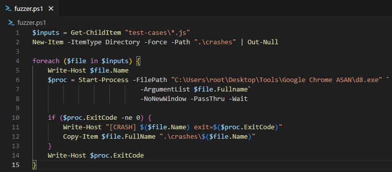
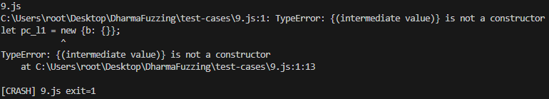

Game Vulnerability Researcher | Anti-Cheat Enthusiast
Here are some of my favorite projects I've worked on
Feb 24, 2026 | Learn how to install and fuzz d8
Hello everyone, today we're going to be looking at d8. What is it, how does it work, and additionally, how we can fuzz it by utilizing Dharma. Below I will explain everything you need to know in order to install d8.exe and attempt to fuzz it yourself!
Before we learn about d8.exe and how to install it, we first have to understand what V8 is. V8 is an open source high-performance JavaScript and WebAssembly engine that was made by Google. It is written in C++ and is used in Chrome and in Node.js.
V8 can run on Windows, macOS, and Linux systems that use x64, IA-32, or ARM processors. V8 can also be embedded into any C++ application. V8 works by compiling and executing JavaScript source code. It takes care of memory allocation as well as garbage collection.
So now that we know more about what V8 is we can begin to learn about d8. d8 is V8's developer shell. Allowing for us to run JavaScript locally as well as debugging changes you make to V8. Google graciously provides us with pre-built Chrome binaries that are built with AddressSanitizer (ASan).
AddressSanitizer (ASan) is a memory error detector for C/C++.
The GitHub for AddressSanitizer provides a list of memory errors it finds. Below, you can see a few of the memory errors listed:
I highly recommend checking out their GitHub to see the full list of errors that ASan detects as well as how to install and utilize Asan. You can find their Github here: AddressSanitizer
While not required to know for the purpose of this article. I will include a further look into how ASan works below, including information on LLVM, and the AddressSanitizerAlgorithm.
AddressSanitizer uses a compiler instrumentation module. This is a module for a compiler that will automatically inject additional code, also known as automation, into an application during the compilation process.
On their GitHub, they include that currently they use "an LLVM pass".
A pass is when a compiler does one or more scans over source code and performs the compilers respective analsys or transformation. Resulting in specific changes to the code for optimization or other intended alterations.
From reading over LLVM's website, I would assume they are utilizing the LLVM Core or Clang which would match up with the fast speeds that ASan speaks about in their GitHub.
For more information on LLVM, their respecitive projects, and documentation. You can view their website here: LLVM - LLVM Overview
AddressSanitizerAlgorithm is a run-time library that replaced the malloc and free functions.
The run-time memory turns memory around malloc-ed regions, or as their refer to them "red zones", into 'poisoned' areas. Memory from running free is placing in quarantine and is also now 'poisoned'. So what does an area being poisoned mean?
ASan's Algorithm changes these functions to check for the memory errors. If there is an attempt to access a poisoned area then that verifies that there is some form of a memory error.
For the poisoned areas around malloc accessing those areas would catch be errors relating to things like Heap Buffer overflows. For the quarantined free'd memory that would make us aware of potential Use After Free vulnerabilities
When ASan sees either of these situations occur, the application will crash and you will receive a stack trace to identify the issue.
As mentioned earlier, Google provides us with the pre-built binaries so that we can access d8. In order to utilize these we need to first install the Google Cloud CLI. Since my primary VM at this time is a Windows Flare-VM I will follow the respective instructions to install it on Windows from their website.
You can go to follow the instructions to install the Google Cloud CLI on your respective OS here: Google - Install the Google Cloud CLI
After you follow the installation wizard, you should have a Google Cloud CLI installed on your machine. From there you can launch the machine and run:
gcloud initThis command will oepn a web browser for you to authenticate using your Google account. After this you have installed and setup the Google Cloud CLI and we can move on to installing the latest Google Chrome ASan built which will include d8.
If you followed all of the steps including in the previous section you should now have access to the Google Cloud CLI. The main reason this is important is so that we can utilize gsutil in order to access Google Cloud Storage buckets and objects.
Below, I will include the commands that you can run in Windows or Linux depending on what OS you're working out of to install the latest Google Chrome ASan build which will include d8.
If you plan to copy and paste this command, make sure that you are in the desired directory that you want this ASan build to be installed in. If you aren't, you can alter the command to copy to your desired directory.
Windows (Must be ran in PowerShell)
gsutil cp (gsutil ls "gs://chromium-browser-asan/win32-release_x64/asan-win32-release_x64*.zip" | Sort-Object | Select-Object -Last 1) .Linux
gsutil cp $(gsutil ls "gs://chromium-browser-asan/linux-release/asan-linux-release-*.zip" | tail -1) .If neither of the steps above worked, please refer to the backup method below for installing the ASan zip manually.
If you need to use the backup method, instead of using any CLI commands, you can go directly to the source and download the zip file yourself.
You can access the available ASan builds for their respective OS's here: Google API - Chromium Browser ASan
If you're also using a Windows machine, you would go into the win32-release_x64 and scroll all the way down (This may take a while) and install the latest release.
As of the time I'm writing this 2/22/2026, when I run the command it installs: "asan-win32-release_x64-999994.zip"
After you've installed and extracted the Google Chrome ASan build, you'll now have access to d8 (d8.exe) which is contained within it.
Before we proceed any further with installing and utilizing Dharma, we want to make sure that it was installed successfully and works with running provided JavaScript.
The easiest way to do this, is to quickly make a JavaScript file that prints text to the console: console.log("Hello World!"); is a great first test.
Save it to a .js file, then you can go to where d8.exe is stored from within cmd and run the following command.
Within cmd.exe: d8.exe test.js Expected Outcome: Hello World!
If that ran properly then you know d8 is processing JavaScript and we can move on to the exciting part. Installing and testing d8 with Dharma!
Now that we have d8 installed, we can install and use dharma to generate fuzz tests that we can then give to d8.
Fortunately Dharam is super easy to install. Just open up your command prompt and run the following:
pip3 install dharma
After running this, you should have dharma installed and you can run dharma in your command prompt to verify it was installed correctly.
Now utilizing our newly installed Dharma, we can create our JavaScript test cases.
In this case, we're going to utilize Dharma's pre-installed grammars. Specifically, the wasm.dg file which is to create fuzzing cases for Web Assembly.
You can run the following command to create as many test cases as you'd like:
dharma -grammars dharma/grammars/wasm.dg -count <# of test cases> -format js -storage <destination>
Now that we've created these test cases. All we have left to do is test them out on d8.
Do keep in mind that these test cases will cover fuzzing d8 with WebAssembly. If you'd like to learn more about creating Dharma grammar, I'll be posting another blog covering that later this week!
The final step is to provide d8 with the test case files. This can be done in a few ways, you can individually feed your d8 each file, you can create a small script in PowerShell/Bash to give the files to d8, or you could use a tool like honggfuzz if you're on Linux.
For the purposes of this article, I will create a small PowerShell script to fuzz d8. However if you'd like to look at a bash script that can do this or using honggfuzz. You can view an amazing article by Patrick Ventuzelo here: Fuzzing Labs - WebAssembly Module Audit and Fuzzing
Now we can run the following PowerShell script and see if any of the generated test cases crash d8!
Too my suprise after running 100 generated cases using the wasm.dg grammar. I only had a single one crash d8. You can see the crash log below.
This was my first time fuzzing an application and I learned a lot! Taking concepts from my previous blog post on learning about different types of fuzzers to then fuzzing a javascript engine developer shell was a lot of fun but definitely came with its challenges.
Installing d8 isn't the most well documented process. So I hope that this post was able to help you with getting it setup and testing out fuzzing as well! My next post will be a deeper look into Dharma, how it works, and how we can start making our own grammar files to cover broader use cases.
Please take care, take some time to learn something new, and happy game hacking!
NitoTech